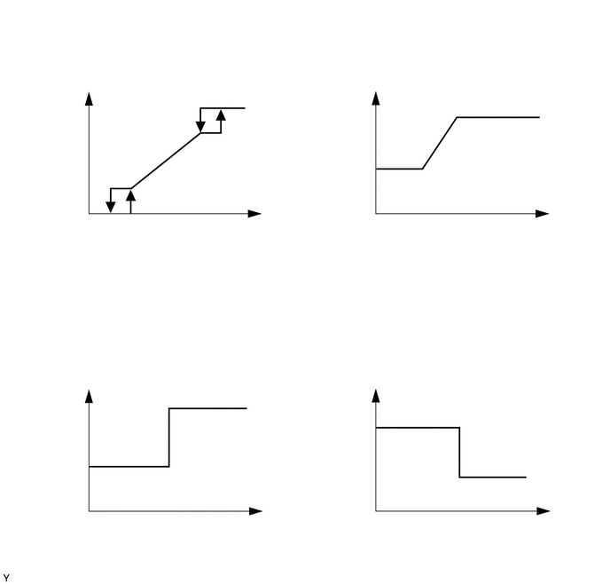

0.083,0.188 2.875,0.76
2.792,0.573
10
false
（图 A）根据发动机冷却液温度得出的所需风扇转速
3.604,0.229 6.26,0.844
2.656,0.615
10
false
（图 B）根据空调制冷剂压力得出的所需风扇转速
0.115,3.823 2.5,4.292
2.385,0.469
10
false
（图 C）根据发动机转速得出的所需风扇转速
3.625,3.792 5.615,4.344
1.99,0.552
10
false
（图 D）根据车速得出的所需风扇转速
0.333,1.667 1.042,1.938
0.708,0.271
10
false
风扇转速
0.292,5.167 1.063,5.813
0.771,0.646
10
false
风扇转速
3.708,1.677 4.417,2.344
0.708,0.667
10
false
风扇转速
3.74,5.125 4.438,5.823
0.698,0.698
10
false
风扇转速
1.083,2.583 3.01,2.979
1.927,0.396
10
false
发动机冷却液温度
1.656,6.031 2.729,6.354
1.073,0.323
10
false
发动机转速
4.729,2.563 6.271,2.958
1.542,0.396
10
false
制冷剂压力
4.99,6.042 6.063,6.438
1.073,0.396
10
false
车速